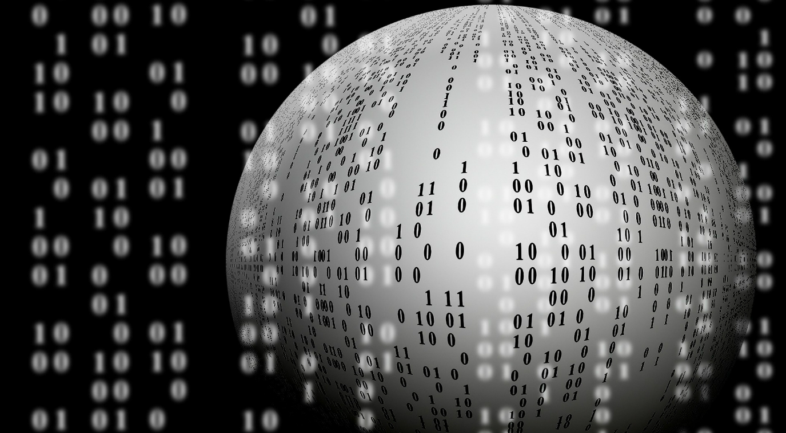
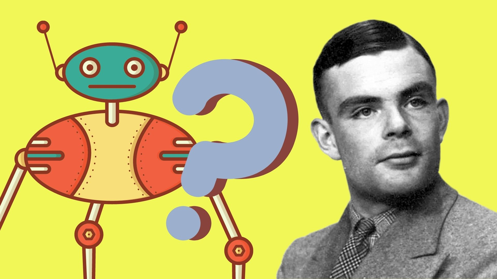
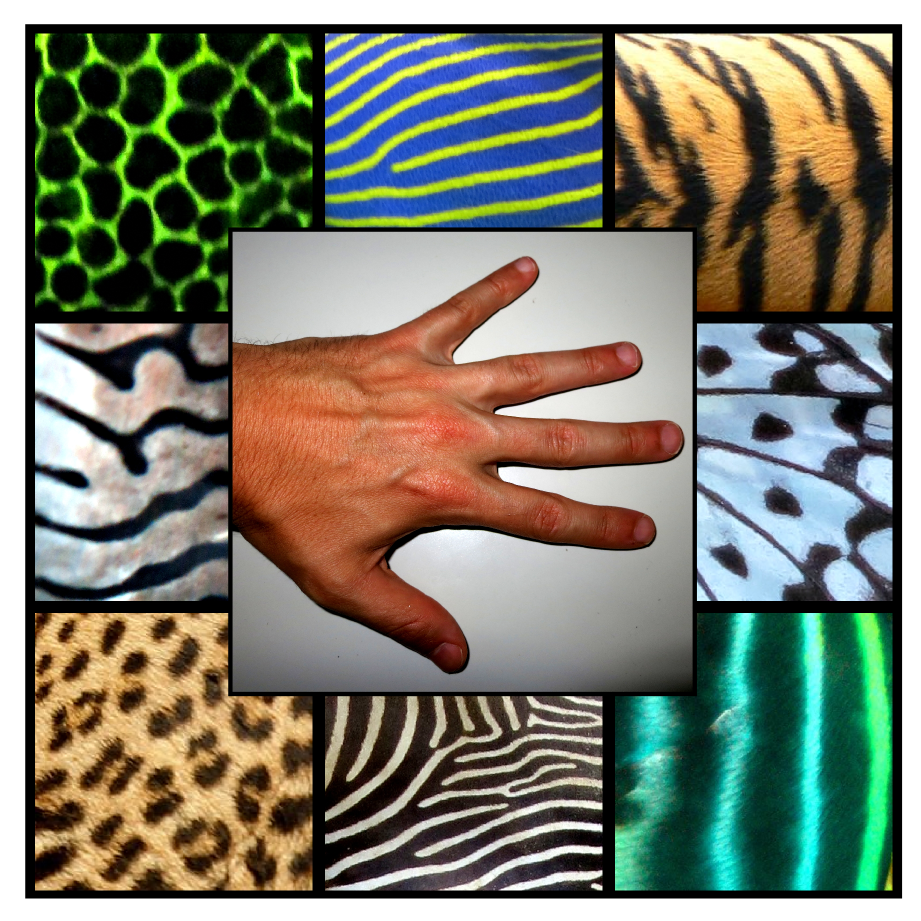

Alan TuringAportes
| Máquina de Turing | Máquina Universal de Turing | Hipercomputación |
|---|---|---|
Elemento fundamental en la teoría de la computación, este dispositivo se encarga del proceso automático para determinar si un problema matemático puede ser resuelto o no mediante un procedimiento definido. Fue ideado para resolver una operación concreta.

|
Turing la concibió en 1936, el mismo año que teorizó acerca de la máquina de Turing. Su punto de partida es el mismo que el de aquella: resolver todos los problemas matemáticos que pueden expresarse mediante un algoritmo. La diferencia radica en que la máquina universal se asemeja a un ordenador gracias a su capacidad de llevar a cabo múltiples procesos y de ejecutar la función de cualquier máquina de Turing.

|
La hipercomputación es la computación o resolución de las tareas que no puede resolver una máquina de Turing. Partiendo de esta idea, en 1938, Turing lanzó la idea de las máquinas oráculo, dedicadas a abordar las tareas que no pueden ser resueltas mediante un algoritmo.

|
| Pilot Model ACE | Test de Turing | Biología Matemática |
Basada en 1950 en un diseño de Turing, fue la primera computadora electrónica desarrollada en Gran Bretaña. Es el desarrollo práctico (no mecánico) de la máquina universal de Turing. Almacenaba un programa en su memoria y gestionaba un lenguaje de programación, el Abbreviated Computer Instructions.

|
Turing defendía que si una máquina tiene un comportamiento inteligente en todos los aspectos, entonces es inteligente. Para someter esto a examen, creó el test de Turing: una persona actuando como juez se coloca en una habitación y, en otra, una persona y un ordenador. El juez tiene que saber quién es quién a partir de sus respuestas escritas. Si no los distingue, significa que el ordenador ha superado la prueba. Hasta hoy ninguno lo ha logrado.

|
De 1952 a 1954, cuando murió, Turing se dedicó al estudio de la morfogénesis, el proceso biológico que lleva a que un organismo desarrolle su forma. Así, Turing lanzó la idea de que la repetición de patrones regulares en el sistema biológico animal, como las rayas en las pieles de las cebras o de los tigres, se debía a dos morfógenos (sustancias químicas) que trabajan a la vez como activadores e inhibidores. Los científicos del King’s College confirmaron la intuición de Turing en 2012.

|